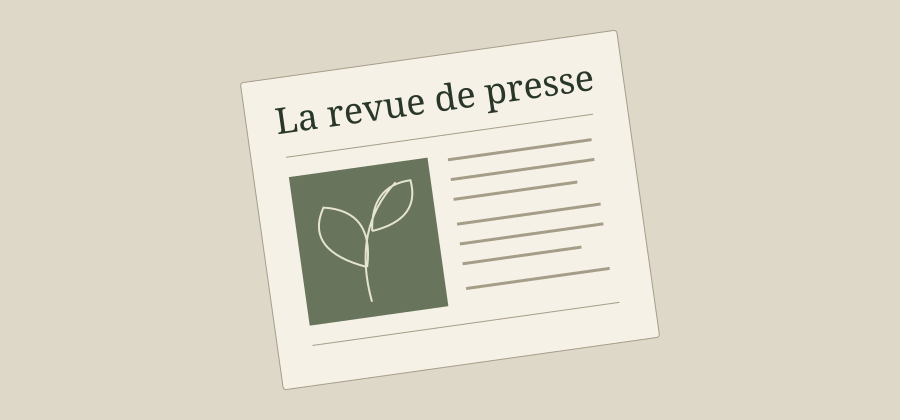

27 mars 2025
Petit Futé — recommandation 2025
Le guide met en avant la créativité végétale et les produits frais.
Lire l’article ↗
27 mars 2025
Le guide met en avant la créativité végétale et les produits frais.
Lire l’article ↗30 janvier 2025
Un article consacré aux tables végétales de Lyon.
Voir l’article (image) ↗24 janvier 2025
Une sélection qui revient sur l'histoire et la démarche du restaurant.
Voir l’article (image) ↗Sélection de publications de presse de 2025. Résumés éditoriaux ; les liens reprennent les destinations du site officiel. Les deux documents image peuvent être indisponibles.